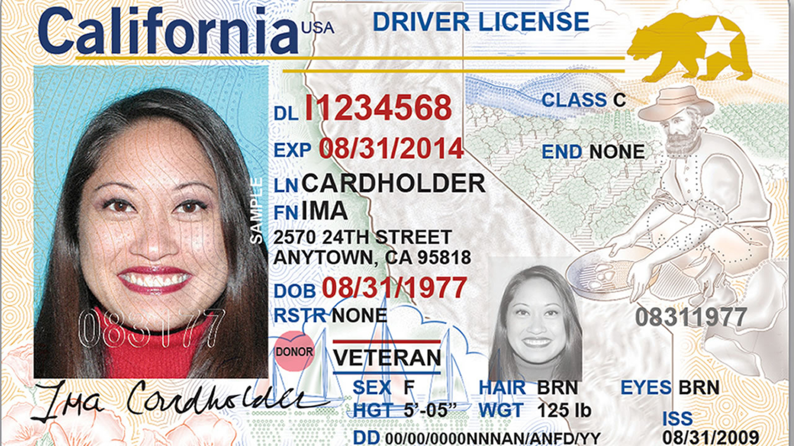

Cali-ID
Reimagining California's digital identity for the modern age

Digital Identification
As our lives increasingly move into the digital realm, physical wallets, credit cards, driver's licenses, even state IDs, feel a little outdated. What if you could carry your California ID in your pocket, fully secure, and instantly accessible? That's where Cali-ID comes in.
The Challenge
While researching for this project, I found that there were three major issues in the designs for existing state IDs.
Key Problems
- Lack of visual identity: Most state IDs fail to reflect California's unique cultural identity. They're generic, bland, and don't feel "Californian."
- Poor information hierarchy: Important details, name, date of birth, expiration, get lost. The layout doesn't guide your eye, so the ID isn't scannable or easy to consume.
- Security concerns: Sensitive data is too easily exposed; there's no strong visual approach to concealing or revealing information securely.
Research & Discovery
To understand how to create this digital ID for California, I looked at:
Existing State IDs
I referenced and researched numerous different existing physical and digital IDs, including California's physical ID, New York's physical ID, and CA digital DMV Wallet.
California Physical ID
- Visually busy with too much information and an unclear type hierarchy
- Sensitive information is too easily accessible
- Symbols on the ID, such as organ donor and real-ID, are inconsistent with other IDs
CA Digital DMV Wallet
- Does not visualize California's identity or branding
- Onboarding page has good options for signing up and gives users signifiers of what they can do right from the start
The Brand and Identity of California
I explored California's visual culture, landscape, architecture, and lifestyle to inform the design direction.

Ideation and Early Concepts
Having gathered more information about California's cultural identity, I created two moodboards for two different stylistic directions.
Style 1: Minimal and Geometric
Inspired by the modern geometric architecture used by many residents in California.

Style 2: Organic and Playful
Inspired by the colorful, playful nature of California and its residents.

Goals
After conducting my research, I created a list of my core goals for this project:
- Security: Sensitive info should only be shown when needed
- Scannable and clear: Use hierarchy, typography, and layout to communicate information effectively
- California's personality: Utilize visual elements to create a design that has warmth and personality
Wireframes
I sketched out initial concepts to explore layout options and information architecture.

Design Iteration 1
I developed both visual directions into high-fidelity mockups to compare their effectiveness.
Style 1: Minimal and Geometric

Style 2: Organic and Playful

Design Iteration 2
For this design iteration, I chose to continue with only Style 2. Style 1 felt more intense and closer to propaganda, while Style 2 felt free, playful, fun, and warm, which feels closer aligned to California's identity.

Final Design & Prototype
The final design embraces California's vibrant personality through organic shapes, warm colors, and clear information hierarchy. The interface prioritizes security by revealing sensitive information only when needed, while maintaining an approachable and friendly aesthetic.

Final Takeaways
This project taught me valuable lessons about balancing functionality with personality in digital identity design:
- The importance of simplicity, clarity, hierarchy, and grids in creating scannable, accessible interfaces
- Consistency in visual identity helps build trust and recognition
- Iterate, iterate, iterate, exploring multiple directions led to a stronger final solution